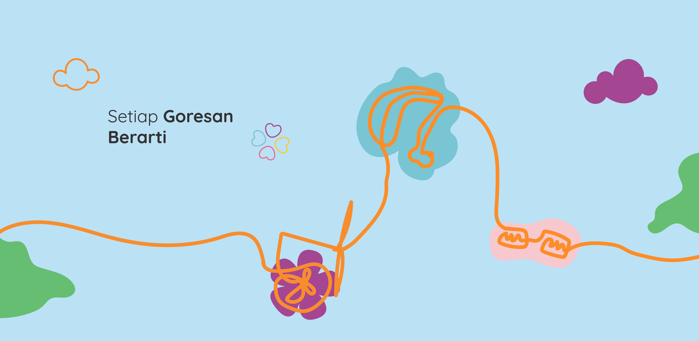
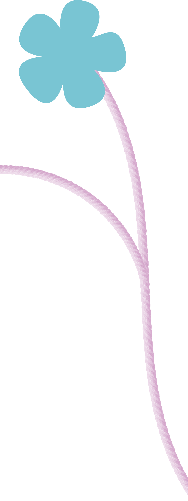
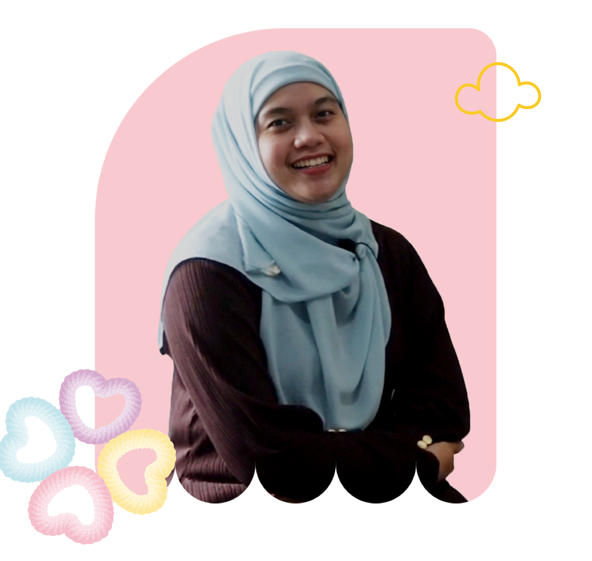
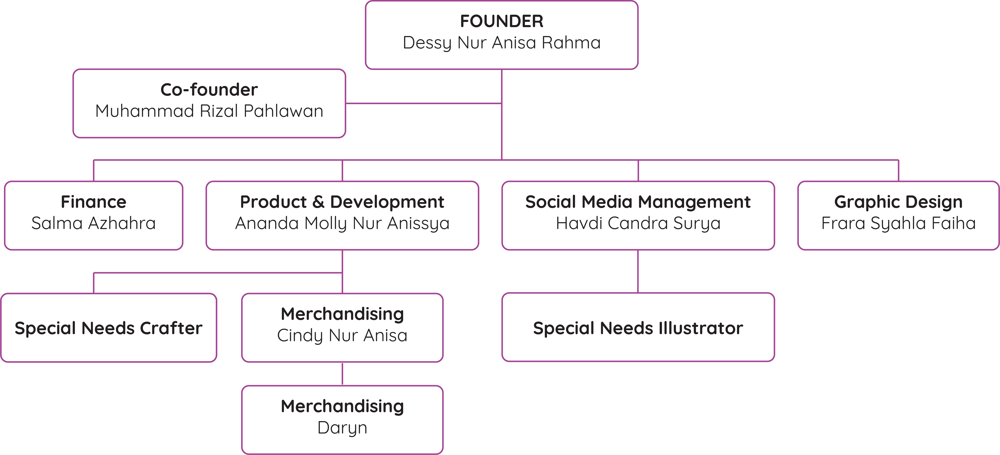

PUKA adalah singkatan dari Pulas Katumbiri, yang berarti goresan pelangi. PUKA merupaan social business yang telah berdiri sejak 2015, memproduksi produk handcraft aksesoris seperti tas, pouch, bando, kaos kaki, dan masih banyak lagi.
Dalam produksi PUKA, PUKA bekerja sama dengan berbagai SLB yang berada di Garut dan juga Bandung. PUKA membuktikan bahwa meskipun mereka memiliki kekurangan, mereka bisa membuat berbagai macam produk yang menarik dan memiliki keunikan tersendiri.

Founder PUKA
Dessy Nur Anisa Rahma
Dessy merupakan alumni program Magister Bisnis dan Administrasi dari SBM-ITB. Dessy berhasil menyulap hobinya membuat tas laptop dari kain goni dan benang wol menjadi bisnis bernilai ekonomi tinggi. Ia merintis dan mengelola PUKA bersama Rafiati Kania yang berperan sebagi Co-founder sekaligus COO PUKA.
VISI
Menjadi ruang berkarya yang inklusif, memberdayakan serta menghasilkan produk bernilai seni tinggi yang ramah disabilitas
MISI
1. Memberdayakan teman - teman berkebutuhan khusus melalui pelatihan dan ruang kerja seni
2. Menghasilkan kerajinan berkuaitas tinggi yang unik, modis dan bernilai jual
